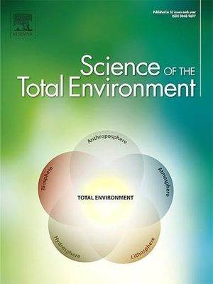
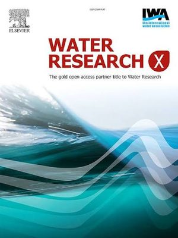
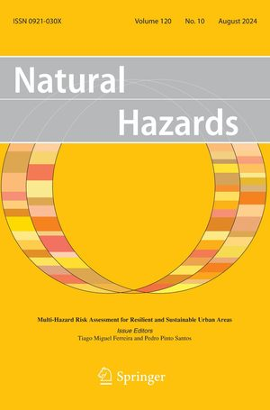
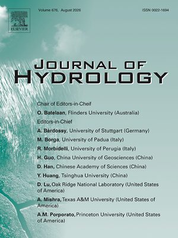
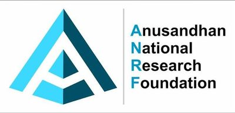
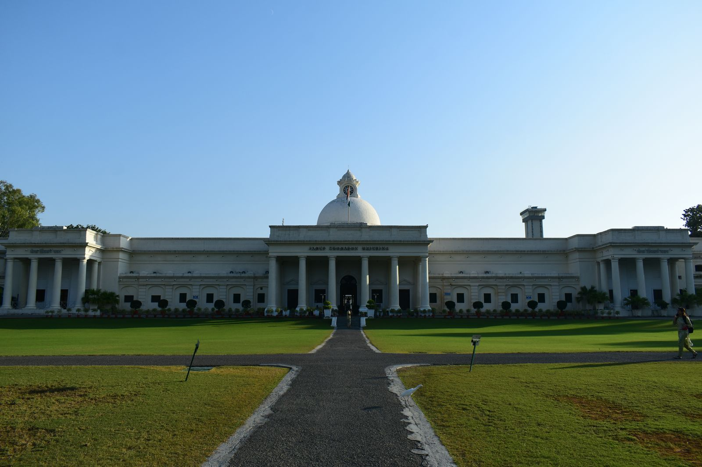

Hydrology · Flood Modelling · Public-Health Risk
PhD Research Scholar — Water Resources Development & Management
Indian Institute of Technology Roorkee, India
I study how urban floods move water — and the microbial risk it carries — through river corridors, coupling hydrodynamic, water-quality and health-risk models to quantify flood-borne disease exposure under a changing climate.
Rahul Deopa · IIT Roorkee
§ 01 — About
I am a PhD Research Scholar in the Department of Water Resources Development and Management at IIT Roorkee, working at the intersection of hydrology, flood hydrodynamics and public-health risk. My research asks a question most flood models leave out: not just where floodwater goes, but what it carries — and who it puts at risk.
My doctoral work develops HyEco, a hybrid hydrodynamic-cum-ecological modelling framework that links flood inundation to human-health risk in flood-prone metropolitan regions. It couples hydrodynamic simulation (MIKE+ / MIKE FLOOD) with water-quality and microbial fate-and-transport modelling (MIKE ECO-Lab) and Quantitative Microbial Risk Assessment, to translate a flood event into an estimate of flood-borne infection risk under climate and socio-economic scenarios.
Alongside flood-health risk, I work on hydro-climatic extremes — design-rainfall regionalisation for data-poor catchments, statistical downscaling, and satellite-based hydroclimatic analysis. I build my own analysis pipelines in Python and R, and I'm always open to collaboration on urban flood risk, water quality and climate-health linkages.
§ 02 — Research
The HyEco framework — an end-to-end chain linking flood hydrodynamics to flood-borne infection risk, so a rainfall event can be traced to a human health outcome.
Hydrodynamic modelling of urban flooding in densely populated megacities, including spatio-temporal and geostatistical rainfall analysis for flood management.
Modelling contaminant and pathogen fate in floodwater and translating exposure into infection probability through Quantitative Microbial Risk Assessment.
Quantifying how urbanisation, climate change and socio-economic dynamics reshape flood and health risk, integrating regional climate models into flood modelling.
§ 03 — Output




Journal Articles
Dataset
Book Chapter
Selected Conference Presentations
* Journal of Hydrology entry is a forthcoming paper — swap in the exact citation. Full list on Google Scholar · ORCID
§ 04 — Projects & Funding
An integrated approach to quantify the impacts of climate change and socio-economic dynamics on the human-health risk associated with contaminated floodwaters.
Modelled campus distribution flow dynamics, pressure zones and residual-disinfectant levels for performance optimisation and infrastructure planning.
Intensive training in climate-data analysis, modelling workflows and coding-based applications for climate-science research.

Doctoral research supported by the Anusandhan National Research Foundation (ANRF), DST, Government of India.§ 05 — Contact
Happy to talk about urban floods, water quality, QMRA, or climate-health collaboration.
rahul_d@wr.iitr.ac.in
rahuldeopa777@gmail.com
+91 78954 38560
Dept. of Water Resources Development & Management
Indian Institute of Technology Roorkee
Roorkee, Uttarakhand 247667, India
